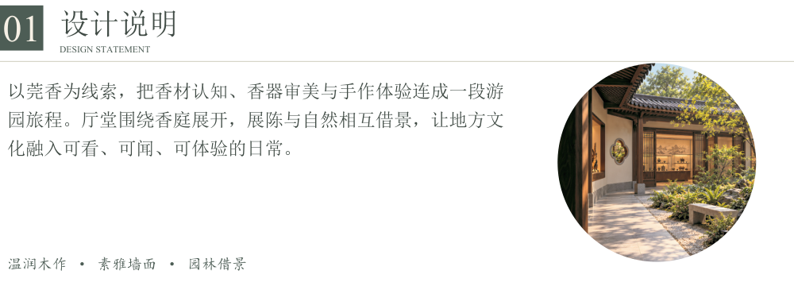

莞香入庭 · 透明排版素材
总平面新增外围园林绿植。12个板块分别导出，可直接置入后续展板；另有独立绿植、净平面、图纸与无字元素。效果图照片保持原背景。
PNG 使用真正的 RGB＋Alpha 透明通道。下方可切换衬底检查，下载文件不含棋盘格。主展板的CMYK PDF在首页提供。
检查透明底：
总平面新增外围园林绿植。12个板块分别导出，可直接置入后续展板；另有独立绿植、净平面、图纸与无字元素。效果图照片保持原背景。
PNG 使用真正的 RGB＋Alpha 透明通道。下方可切换衬底检查，下载文件不含棋盘格。主展板的CMYK PDF在首页提供。